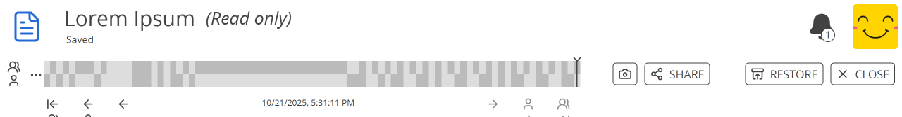
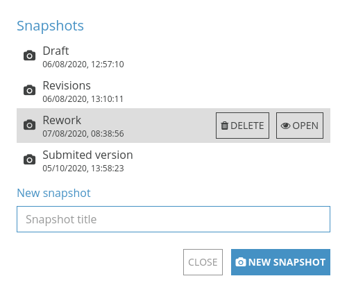

Allgemein#
Neues Dokument#
Um ein neues Dokument zu erstellen:
Überall in CryptPad: Strg+E.
Im CryptDrive:
Neu in der Werkzeugleiste.
Neues Pad am Ende der Liste/Kachelansicht.
Im Dokument: Datei > Neu.

Eingeloggte Benutzer
Der Dialog zur Erstellung neuer Dokumente bietet mehrere Optionen an.
Eigenes Pad: Erstellt das neue Dokument als Eigentümer. Wenn das Dokument ohne einen Eigentümer erstellt wird, kann diese Einstellungen nicht geändert werden.
Auslaufendes Pad: Bestimmt einen Zeitraum, nach dem das Dokument zerstört werden soll. Diese Einstellung kann nach der Erstellung des Dokuments nicht mehr geändert werden.
Passwort hinzufügen: Sichert das Teilen des Dokuments mit einem Passwort ab. Diese Einstellung kann später im Menü Zugriff geändert werden.
Vorlage: Lege ein leeres Dokument an oder nutze eine Vorlage als Basis.
Bemerkung
Alle Vorlagen, die im CryptDrive oder in einem deiner Teams gespeichert sind, werden bei der Erstellung eines Dokuments angezeigt. Um ein Dokument als Vorlage zu speichern:
Im geöffneten Dokument: Datei > Als Vorlage speichern.
oder
Im CryptDrive: Ziehe das Dokument zum Ordner Templates.
Speichern#
Änderungen an Dokumenten werden automatisch gespeichert. Die Statuszeile in der Werkzeugleiste (unterhalb des Titels) bestätigt, dass die Änderungen gespeichert wurden.
Eine Kopie anfertigen#
Um ein Dokument zu duplizieren:
Im Dokument: Datei > Kopie erstellen.
Im CryptDrive:
Rechtsklickeauf das Dokument > Kopie erstellen.
Bemerkung
Die Funktion zum Erstellen einer Kopie kann verwendet werden, um den Verlauf einer Datei zu löschen, beispielsweise wenn du Inhalte aus dem Verlauf entfernen und/oder ihn vollständig unzugänglich machen möchtest.
Warnung
Beachte bei der Verwendung der Funktion "Kopie erstellen", dass du das Dokument erneut mit deinen Kontakten oder anderen Personen teilen musst, denen du den Link geschickt hattest.
Dokumentenverlauf#

Die Werkzeugleiste für den Verlauf#
Der Verlauf von Dokumenten wird gespeichert und kann bei Bedarf wiederherstellt werden. Um den Verlauf eines Dokuments anzusehen und wiederherzustellen:
Datei > Verlauf.
Verwende die Pfeile zum Navigieren:
und zwischen den Bearbeitungen.
und zwischen den Autoren.
und zwischen den Sitzungen (wenn die gleichen Autoren mit dem Dokument verbunden waren).
Stelle die ausgewählte Version mit Wiederherstellen wieder her oder verlasse den Verlauf ohne Wiederherstellung mit Schließen.
Um Speicherplatz zu sparen, kann der Verlauf in den Eigenschaften des Dokuments gelöscht werden. Eigentümer von Dokumenten
Bemerkung
Der Verlauf funktioniert in der Anwendung Tabellen aufgrund der Integration von OnlyOffice in die verschlüsselte Echtzeit-Zusammenarbeit von CryptPad etwas anders. Siehe den Abschnitt zu Verlauf in Tabellen für weitere Details.
Link zu Versionen
Um einen Link zur angezeigten Version zu teilen:
Teilen in der Werkzeugleiste.
Wähle Kontakte, Link oder Einbetten ähnlich wie beim Teilen eines Dokuments.
Die Empfänger können die ausgewählte Version schreibgeschützt ansehen.
Warnung
Durch das Teilen eines Links zu einer Version wird auch schreibgeschützter Zugriff auf alle Version des Dokuments weitergegeben.
Version aus dem Verlauf speichern
Um den angezeigten Bearbeitungsstand im Verlauf als gespeicherte Version festzulegen:
Schaltfläche in der Werkzeugleiste.
Gib im Dialog einen Namen für die gespeicherte Version an.
Version speichern
Gespeicherte Versionen#

Der Dialog zum Speichern von Versionen#
Gespeicherte Versionen sind bestimmte Punkte im Verlauf eines Dokuments, die zur besseren Auffindbarkeit benannt sind.
Um den aktuellen Stand eines Dokuments als gespeicherte Version festzulegen:
Datei > Gespeicherte Versionen
Gib im Dialog einen Namen für die gespeicherte Version an.
Version speichern
Zur Festlegung eines Bearbeitungsstands im Verlauf als gespeicherte Version siehe entsprechenden Abschnitt oben.
Um eine gespeicherte Version anzusehen und wiederherzustellen:
Datei > Gespeicherte Versionen
Klickeim Dialog auf die gespeicherte Version und dann auf Öffnen.Die gespeicherte Version wird in einem neuen Fenster geöffnet.
Wiederherstellen oder Schließen
Um eine gespeicherte Version zu löschen:
Datei > Gespeicherte Versionen
Klickeim Dialog auf die gespeicherte Version und dann auf Löschen.
Eigenschaften#

Um auf die Eigenschaften zuzugreifen:
Im Dokument: Datei > Eigenschaften.
Im CryptDrive:
Rechtsklickeauf das Dokument > Eigenschaften.
Verfügbare Informationen:
Kennung des Dokuments zum Teilen mit den Administratoren der Instanz bei Problemen (dies gibt keinen Zugriff auf den Inhalt des Dokuments).
Links zum Bearbeiten und Ansehen (abhängig von deinen Zugriffsrechten).
Zeitpunkte der Erstellung und des letzten Zugriffs.
Größe.
Die Größe des Dokuments beinhaltet den von Inhalt und Verlauf belegten Speicherplatz. Um Speicherplatz zu sparen, lösche den Verlauf des Dokuments mit Verlauf löschen und bestätige. Eigentümer von Dokumenten
Warnung
Gespeicherte Versionen are part of the document's history. If you delete the history in the document's properties snapshots will be deleted as well.
Benutzer und Chat#
Interagiere mit anderen Benutzer, die mit dem selben Dokumenten verbunden sind, über die Benutzerliste und den Chat.
Um diese Bereiche ein-/auszublenden:
für die Benutzerliste.
Chat für den Chat.